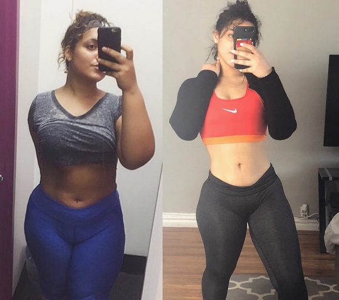
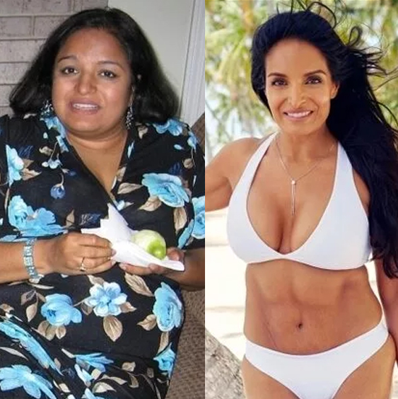
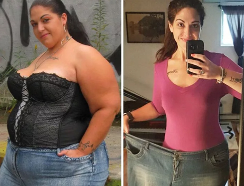

¡LA GRASA NO ES POR LA ALIMENTACIÓN! Puede deshacerse de hasta 15 kg de grasa sin químicos, hambre y cargas físicas.
Comenta el médico de la categoría más alta José Luís Gonzalez
Las dietas, el ejercicio, las píldoras y la liposucción son hoy las principales formas de combatir el aumento de peso. Sin embargo, a juzgar por el hecho de que el número de personas obesas continúa creciendo, ninguna de ellas es realmente efectiva.
La situación cambió cuando apareció en España gotas
Fortunella - un remedio que estimula la pérdida de peso natural.
Dr. José Luís Gonzalez
Director del Centro Científico Médico Nacional, Doctor en Ciencias Médicas, Especialista honorario en España, médico general, nutricionista.
Experiencia laboral - 42 años
¿Qué son las gotas Fortunella?
Si su cuerpo tiene deficiencia de vitamina A, coma naranjas; si es fósforo, coma pescado; si es vitamina C, coma grosella negra. El suplemento alimenticio a base de hierbas Fortunella contiene todos los oligoelementos necesarios para ayudar a quemar grasas en el cuerpo humano. En particular, esta herramienta es un súper antioxidante que quema grasas y normaliza la actividad de todo el cuerpo.
Gotas Fortunella es un suplemento alimenticio 100% natural elaborado a base de ingredientes naturales: linaza molida, semillas de chía, alcachofas, espirulina, berenjena, estevia, etc. 5 gramos: una porción del producto contiene la cantidad necesaria de sustancias activas, ¡lo que aumenta la tasa de quema de grasa en 10 veces! Se ha demostrado clínicamente que las gotas Fortunella aceleran el metabolismo, restauran la actividad del sistema endocrino, estimulan la regeneración de los tejidos y suprimen el hambre. El producto es completamente natural y es un estimulador activo de procesos naturales en el cuerpo humano. Dado que la quema de grasa ocurre debido al rápido metabolismo, no se requiere una dieta. Nutrición equilibrada + sumplemento Fortunella dos veces al día es suficiente para mantener el metabolismo adecuado. La actividad física intensa en este caso tampoco es necesaria. Si lo desea, puede realizar cualquier ejercicio simple para aumentar el tono muscular.
Principales propiedades de las gotas Fortunella:
Quema de grasa
Supresor del apetito
Normalización del fondo hormonal
Rejuvenecimiento y limpieza del cuerpo
Efecto tonificante quemagrasas
Gracias a las gotas Fortunella, el metabolismo se acelera significativamente y, por lo tanto, la grasa subcutánea en las áreas problemáticas se quema a gran velocidad. 700 gramos por día! Las gotas Fortunella son efectivas incluso en casos donde las fluctuaciones hormonales son las culpables del sobrepeso. Si tiene sobrepeso, ¡este producto es definitivamente para ti!
En México, este producto apareció hace poco relativamente, pero ya ha logrado establecerse como un producto favorito de los culturistas y atletas que necesitan perdida de peso rapida mantenimiento de un bajo porcentaje de grasa en el organismo
Resultado después de tomar las gotas Fortunella durante 27 días

Resultado después de tomar las gotas Fortunella durante 30 días
Resultado después de tomar las gotas Fortunella durante 45 días
Resultado después de tomar las gotas Fortunella durante 33 días
Comentarios de los investigadores:
Juan Carlos Yunquera
Nutricionista, Endocrinólogo
Experiencia laboral - 27 años
"Lo más importante para perder peso es no agravar la condición del cuerpo. Desafortunadamente, las formas más populares para perder peso no pueden presumir de esto. Es muy difícil seguir una dieta constantemente, no todos pueden soportar una abstinencia alimentaria prolongada. Al no haber alcanzado el objetivo, las personas vuelven a tomar píldoras u otras drogas para perder peso, la mayoría de las cuales causan un gran daño al cuerpo, alteran el equilibrio hormonal, la función hepática y suprimen la inmunidad. La pérdida de peso debe ser natural y no afectar los procesos internos del cuerpo Hoy en día, gotas Fortunella - es el único producto que hace frente con éxito a estas tareas sin dañar la salud. Los microelementos activos de las gotas Fortunella causan una aceleración del metabolismo y estimulan la quema intensiva de grasas. Su concentración en una sola dosis de Fortunella (5 g ) mejora estos procesos al menos 10 veces. Puedo declarar con seguridad que este producto es el mejor invento de la dietética moderna. Es absolutamente seguro y el efecto de tomarlo se puede ver después de 3-5 días. Si quieres perder peso para siempre, ¡Las gotas Fortunella es lo que necesitas!"
Angelica Perez
Nutricionista, Endocrinólogo
Experiencia laboral - 18 años
"Las mujeres a menudo vienen a mí llorando. Lo intentaron todo, pero nada funcionó, o el peso volvió muy rápido nuevamente. Solía aconsejarles que no entraran en pánico e intentarlo un poco más tarde. Hoy hay una mejor solución a este problema, y es - Gotas Fortunella. Nunca ha sido tan fácil perder peso. Este suplemento deben tomarse diariamente sin temor a su salud. Gracias a las gotas Fortunella, quemarás hasta 5 kg por semana de forma completamente natural. Este es un producto completamente natural que es adecuado para todos, independientemente de su sexo, edad y exceso de peso. La pérdida de peso se logra solo quemando grasa y no deshidratando el cuerpo. Complejo adelgazante a base de hierbas gotas Fortunella han ganado popularidad durante mucho tiempo en asia y EE.UU, y ahora se están volviendo cada vez más populares en Europa, en particular en España. Personalmente, recomiendo este medicamento a todos mis pacientes, y cada vez escucho de ellos gratitud por una figura delgada."
Investigación
Resultados de pruebas de laboratorio de las gotas Fortunella en la Asociación de Dietas Saludables:
Un grupo de personas con sobrepeso (100 personas) tomó las gotas Fortunella dos veces al día, 30 gotas, por la mañana y por la noche, después de las comidas. La prueba duró un mes. En este caso, ninguno de los voluntarios no cambió su dieta habitual. Durante el estudio, se obtuvieron los siguientes resultados:
1. Pérdida de masa grasa de 12 a 15 kg.
- para perdida de 15 kg - 95%
- para perdida de 12 kg - 100%
* La pérdida en este caso significa deshacerse de la masa grasa y su ausencia durante 1 mes.
2. Mejora notable en el metabolismo.
3. Aumento del tono y la actividad física.
4. Mejora del hígado y del sistema endocrino.
Se ha comprobado que las gotas Fortunella tienen un poderoso efecto en acelerar el metabolismo y quemar grasa. El suplemento quemagrasas Fortunella se recomienda para personas con sobrepeso, así como para aquellos que tienen trastornos metabólicos.
Hola, intenté tomar las gotas Fortunella y perdí solo 4 kg en un mes....
Porque leyó mal la sección `método de aplicación`. ¡Vuelva a leer cuidadosamente y comience a beber el medicamento estrictamente de acuerdo con las instrucciones!
Atte, Dr. José Luís Gonzalez
Sólo tomaba las gotas Fortunella y comía todo lo que me gusta. Y aún así perdí 14 kg. ¡Creo que Fortunella para bajar de peso es la mejor solución que he probado! Y lo mejor es que no necesitas ejercitarte en el gimnasio para que tu cuerpo esté en excelente forma. No tengo tiempo ni deseo para esto ... En resumen, ¡este producto es un verdadero hallazgo para gente perezosa como yo! Lo recomiendo! Aquí están mis resultados:

Antes de comenzar a beber Fortunella, pesaba 90 kg. En mi juventud tenía una figura atlética maravillosa y, con la edad, apareció grasa en el estómago y las caderas. ¡A los 35, me di cuenta de que necesitaba urgentemente ponerme en forma! Durante casi un año entrené intensamente, pero no pude alcanzar la forma deseada. Luego incluí Fortunella en mi dieta diaria, ¡y en solo unas semanas recuperé mi figura que hizo que todas las mujeres se volvieran locas! Aunque este suplemento para quemar grasa tiene un efecto acumulativo y estabiliza el peso durante mucho tiempo, todavía tengo un par de paquetes Fortunella de reserva.

No sé cómo, pero a mí las gotas Fortunella realmente me ayudaron. Estoy feliz y orgullosa de mi resultado: menos 16 kg en 4.5 semanas. Pérdida de peso rápida!
¿Quizás solo tienes que comer menos? Entiendo un organismo en crecimiento en los niños y necesitan muchos nutrientes. Pero ustedes son adultos, ¿no pueden controlarse?
Aurora Gerrero Ortiz, si no lo sabía, las personas que tienen una tendencia genéticamente inclinada a tener sobrepeso, ni una dieta ni medicamento pueden salvarlo. Si no tiene tendencia a tener sobrepeso, tiene suerte, pero le aseguro que no todos tienen tanta suerte como usted.
Saludos, Dr. José Luís Gonzalez
¡El doctor tiene razón! No como casi nada, pero no ayuda. El peso se se mantiene y no disminuye
Me sorprende que mucha gente piense que sólo los nutricionistas conocen las gotas Fortunella. Este producto me ayudó a perder 14 kg hace 3 meses. Finalmente me siento cómoda y puedo usar cualquier tipo de ropa. Lo más importante es que este suplemento es 100% natural, contiene un potente concentrado vegetal quemagrasas. Es bueno para la salud y no tiene efectos secundarios. Así que recomiendo a todos que lo prueben. Califica mis fotos ANTES y DESPUÉS


¿Por qué llevar a todos al mismo nivel? ¿Por qué todos deberían ser flacos? Por ejemplo, peso 79 kg con una altura de 167 y no me avergüenzo de esto. ¡Me encanta cómo me veo y me siento genial!
Maria del Carmen Fernandez, la moda del siglo XXI hace que las chicas lleguen a los extremos y parezcan modelos. A menudo esto afecta negativamente su salud. Por lo tanto, creamos las gotas Fortunella: este medicamento quema grasa intensamente, reduce el peso, pero al mismo tiempo no daña la salud, sino que solo lo mejora gracias a los componentes naturales y las vitaminas en su composición.
Saludos, Dr. José Luís Gonzalez
CHICAS! URGENTE NECESITO PERDER 9 KG!!!!!!!!!! ESTUVE MEDIO AÑO EN CASA Y NO ME DI CUENTA COMO AUMENTE. QUE HAGO? SOS!! NO PUEDO HACER DIETA, NO TENGO FUERZA, LUEGO COMIENZO A COMER MÁS. LA ACTIVIDAD FISICA TAMPOCO ES PARA MÍ, ME ABURRE ...
Juanita Rugama Aguilera, la pereza no es la mejor cualidad de una persona, pero, afortunadamente, ¡tienes suerte! gotas Fortunella es exactamente lo que necesitas.
Dr. José Luís Gonzalez

Sitio oficial del fabricante es el único lugar donde puede comprar el producto gotas Fortunella original? ¿O se vende en alguna tienda online?
Desafortunadamente si. Porque las farmacias comerciales hacen un gran margen de beneficio en Fortunella, y el costo del producto aumenta varias veces. Además, el fraude está muy extendido en Internet, y si compra una falsificación, arriesga su salud. En el sitio web oficial del fabricante, puede comprar el producto Fortunella original y seguro al precio más asequible, a veces también con un descuento, si tiene suerte.
Dr. José Luís Gonzalez
Mi esposa tampoco puede perder peso. Cuando nos casamos: pesaba 53 kg, ahora 68. Lo peor es que está contenta con todo. Estoy de acuerdo con ustedes, se acostumbra al exceso de peso muy rápido
Sí, pero si no le gusta, pida gotas Fortunella para ella. Ni siquiera tiene que decirle nada a su esposa, porque el producto es conveniente para usar como aditivo alimentario; simplemente vierta 30 gotas en jugo o agua y déjela beber. Y así dos veces al día. Te sorprenderá lo rápido que bajará de peso. Y créame, cuando descubra por qué sucedió esto, ¡se lo agradecerá!
Atte, Dr. José Luís Gonzalez

¡Mi consejo para ti es que pruebes gotas Fortunella y verás lo efectivo que es! Si tiene un poco de sobrepeso, ¡un tratamiento corto será suficiente!
Dr. José Luís Gonzalez
TENGO 97 KG. No sé cómo eliminarlos. NO QUIERO PASAR LOS 100. ¿QUÉ HAGO????? AYUDA!!!!!!! ¿PUEDO ENCONTRAR gotas Fortunella EN UNA FARMACIA??????
No creo.. Además, el descuento es válido SOLO para pedidos en el sitio Y aquí está el producto original
Es importante no entrar en pánico, todo se puede resolver. Comencemos gradualmente. En primer lugar, desafortunadamente, este producto no se puede encontrar en una farmacia comercial. Ya he explicado por qué. En segundo lugar, pida gotas Fortunella y siga las instrucciones. Y tendrás éxito.
Dr. José Luís Gonzalez
Hola! Soy madre de dos hijos y, por lo que puedo recordar, siempre trato de perder peso. No puedo seguir una dieta, literalmente la hago un par de días, luego me descompongo y como en exceso. No hay absolutamente ningún tiempo para hacer deporte. Leí este artículo y no puedo esperar para comenzar a tomar gotas Fortunella. No entiendo bien, ¿es mejor diluirlo en jugo o agua, o no importa? ¿Está todo escrito en detalle en las instrucciones? ¿Ninguna adicción? Si puede, responda mis preguntas o dígame dónde leer al respecto. Estaré muy agradecida.
Hola! Tengo 50 años y realmente quería perder peso. A esta edad, es difícil perder peso, porque el metabolismo se ralentiza ... ¡Así que también ordené el tratamiento de las gotas Fortunella para mí y perdí 19 kg! El efecto me golpeó! ¡Hasta 19 kg en un mes y medio! No esperaba tales resultados, y por lo tanto estoy doblemente feliz. Gracias por el articulo. Recomiendo Fortunella a todos.
Genial que yo también descubrí accidentalmente las gotas Fortunella. Ya no esperaba perder peso y casi llegué al hecho de que siempre me mantendría gorda. Pero cuando comencé a beber este suplemento, ¡en solo 1 mes perdí 15 kg! No me reconozco en el espejo y muchos conocidos piensan que me hice una cirugía para reducir el estómago... Aunque esta forma de perder peso es costosa y peligrosa, ¡no me atrevería! Lo más importante para mí es que todos los componentes de Fortunella son de origen vegetal, sin química, etc. Me siento aún mejor ahora, tengo mucha energía y siempre estoy de buen humor. Estoy agradecida por este invento porque no tuve que cambiar nada en mi vida para obtener el cuerpo de mis sueños. No se necesitan deportes o dieta para perder peso. ¡Es genial!
Este es un sentimiento genial cuando realmente querías algo, pero pensabas que era casi imposible. Y tal milagro. Ya he perdido 10 kilogramos y continúo al mismo ritmo. Los amigos piensan que sigo una dieta estricta, se preocupan por mí. Pero hasta ahora decidí que no debería decir nada sobre las gotas Fortunella, que haya una sorpresa
Ana María, no me de las gracias! Es un gran honor para nosotros ayudar a las personas, porque somos médicos y nos preocupamos por la salud de todos.
Dr. José Luís Gonzalez
Dime donde compraste? En farmacias, esta herramienta no está a la venta. Me gustaría comprar el original, no el falso. No habrá resultado, y además, es peligroso para la salud.
Una vez más, repito que las gotas Fortunella se puede pedir SOLO en el sitio web oficial del fabricante. Y hoy tienes una gran oportunidad de pedir este producto a mitad de precio con un 50% de descuento. ¡No pierdas tu oportunidad! ¡Para no equivocarse e ir inmediatamente al sitio web oficial, simplemente haga clic en el botón debajo de `Ir al sitio web del fabricante`! Una promoción única es válida específicamente para nuestros lectores por acuerdo con el fabricante. Pero no durará mucho, así que date prisa con el pedido.
Y ten cuidado con las falsificaciones.
Dr. José Luís Gonzalez
¡Me encanta las gotas Fortunella! He estado bebiendo este suplemento durante solo 10 días, pero ya he perdido 5 kg. Creo que estoy en el camino correcto. Quiero perder 15 kg con un solo tratamiento. Deseanme buena suerte....